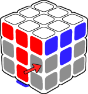
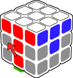

Nos encontraremos con 3 situaciones distintas para colocar la arista en su lugar
Caso uno
La arista va a su derecha. Mirando la T de cara realizamos el siguiente algoritmo:
| Movimientos | Caso |
|---|---|
Movimiento D’ R’ D R D F D’ F’ |
 |
Caso dos
La arista va a su izquierda. Mirando la T de cara realizamos el siguiente algoritmo:
| Movimientos | Caso |
|---|---|
Movimiento D L D’ L’ D’ F’ D F |
 |
Caso tres
Nos podemos encontrar que en la capa inferior no haya ninguna arista que no tenga color amarillo y que la segunda capa no esté resuelta. Esto pasa cuando todas las aristas sin color amarillo están colocadas en la segunda capa pero no de manera correcta.
Para solucionarlo simplemente colocamos cualquier arista que tenga color amarillo en el lugar de una de las aristas que queremos colocar correctamente. Una vez realizado, la arista sin color amarillo quedará en la capa inferior del cubo para poder continuar.
Una vez todas las aristas estén colocadas tendremos la segunda capa completada.